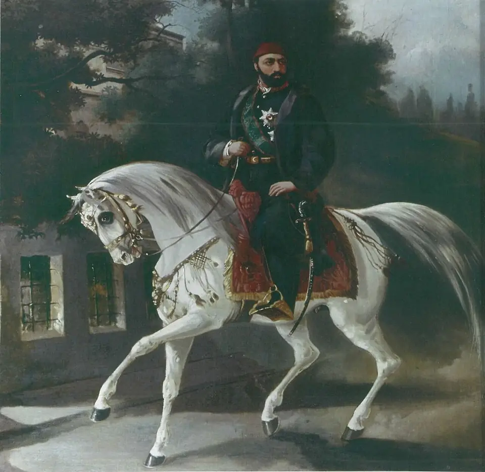
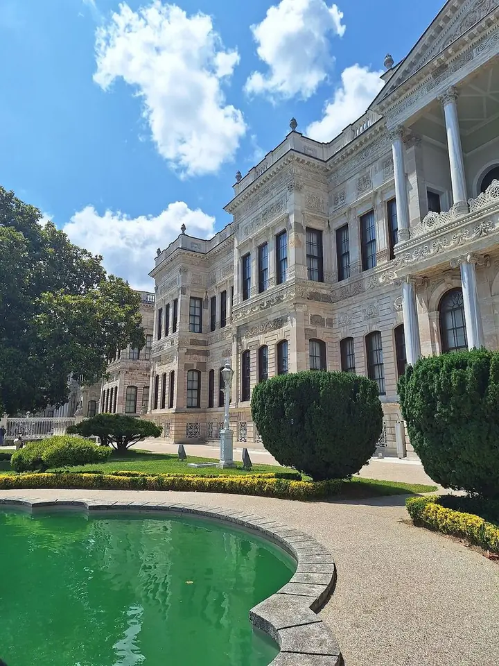

Poles in the Sultan's Service
National Palaces Painting Museum – Chlebowski's paintings
For twelve years a Polish painter worked for Sultan Abdülaziz – often from the Sultan's own sketches – and his portraits of the ruler belong to this museum.


- District
- Beşiktaş
- Period
- 1864–1876
- Visiting
- Open to visitors
The story
Sultan Abdülaziz sketched the battles he wanted on canvas himself – and the man who painted them was a Pole, Stanisław Chlebowski.
Born in Podolia in 1835 and trained in St Petersburg and Paris, Chlebowski arrived in Istanbul at the end of 1864. Some historians credit Michał Czajkowski – Sadyk Pasha – with opening the palace doors for him. In spring 1865 four of his Ottoman history paintings for the Sultan went on public show for eight days at the Galatasaray barracks. In 1870 Abdülaziz, himself an amateur painter, made him court painter (Mâbeyn-i Hümâyûn ressamı). Formally he held the post until 1872, but worked for the Sultan until 1876.
Abdülaziz drew compositions on paper, and sketches by Chlebowski with the Sultan's corrections in red ink survive in Kraków. An anecdote recorded by the painter Mehmed Sami: when the Sultan corrected the lines of a picture, the offended Pole wanted to complain, then found the corrections were right. In letters home Chlebowski grumbled about painting endless horses and battles and likened court life to prison; Ottoman records show he was rewarded about twice as generously as other court painters.
The National Palaces Painting Museum, in the former Crown Prince's apartments of Dolmabahçe, holds sixteen paintings attributed to him. The museum's curator lists among works on show a full-length portrait of Abdülaziz of 1867 – the Sultan by a pool at Beylerbeyi Palace, a groom leading his horse – and two small portraits in the section on court painters. It also has a signed drawing by Abdülaziz himself, a steamship drawn while he was crown prince. In 1876 the Sultan lost his throne and soon died; Chlebowski left for Paris, and his monumental Entry of Mehmed II into Constantinople is now in the National Museum in Kraków.




How to visit
The museum occupies the former Crown Prince's apartments (Veliaht Dairesi) at the Beşiktaş end of the Dolmabahçe complex. The easiest way is the F1 funicular from Taksim to Kabataş, then a 15-minute walk along the palace. Check tickets and opening hours on millisaraylar.gov.tr. Displays change: the museum's curator has described the 1867 portrait of Abdülaziz in the Abdülmecid and Abdülaziz room and two small portraits in the court painters' section, but there is no guarantee you will see them on the day – ask the staff about Chlebowski's paintings.
People
- Stanisław Chlebowski
- Sultan Abdülaziz
- Michał Czajkowski (Sadyk Pasza)
- Mehmed Sami
Location
Beşiktaş, Istanbul · Coordinates: 41.03966, 29.00272